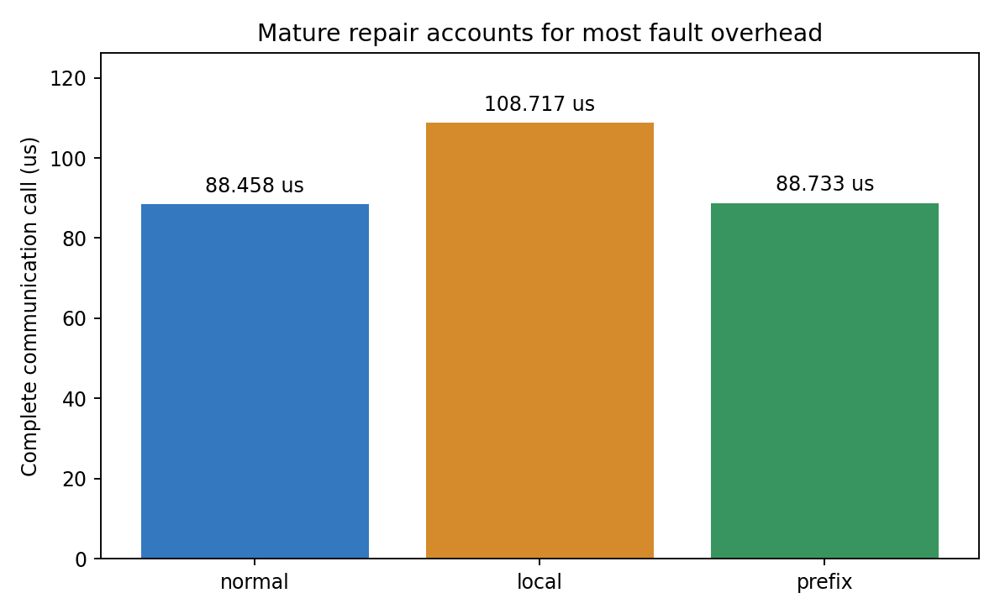
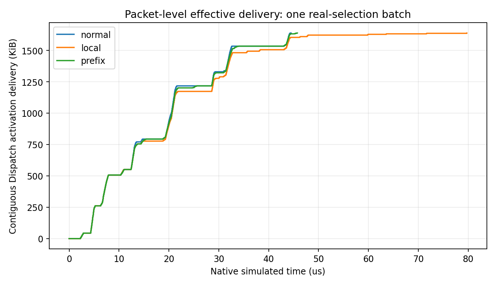

正常88.458µs，本地过滤108.717µs，成熟绕路88.733µs。绕路收回约98.6%的故障额外等待；当前场景不足以支撑新恢复算法的收益主张。残余0.275µs是观测差距，不是已证明可消除的收益。
128端点Clos，一个EP32组，15份不同R1-AWQ/MMLU本机原件，每份layer3/entry1的一个Decode token；15个数据源rank，120次真实Top8选择，64个专家被选，最高专家被选9次。该频率只代表此窗口，不证明长期或训练热点。其余96端点无该组工作。
| 条件 | 完整通信调用 µs | 网络排空 µs | 重复载体 B |
|---|---|---|---|
| normal | 88.458 | 100.471 | 0 |
| local | 108.717 | 116.726 | 105900 |
| prefix | 88.733 | 100.746 | 0 |
normal：无故障；local：故障交换机从原有ECMP候选中排除坏出口，可靠传输仍使用选择性重传；prefix：同样故障，在原有候选无法转发时使用成熟的显式修复路径。三者不是有无重传的对比。


曲线由经过完整审计的实际包交付记录重建，按字节区间去重，排除32B载体头与16B Dispatch元数据，只统计跨rank Dispatch激活。它表示连续交付给上层的字节，不是乱序包首次物理到达，也不包含本地复制、Combine或ACK。数据交付完毕不等于控制通知、完整调用或网络排空。
| 条件 | 最后有效连续交付 µs | 最晚Dispatch接收屏障 µs |
|---|---|---|
| normal | 44.503 | 44.572 |
| local | 79.738 | 79.739 |
| prefix | 45.776 | 45.777 |
三者均交付117份跨rank Dispatch激活，共1,677,312有效字节。故障条件最后一段交付明显拖后，但阶段最大值可能来自不同rank，不能相加为一条关键路径。完整调用最后等待的专家也随条件改变；尚未把0.275µs残差归因于某个固定包或证明它可消除。
三个网络各一次，保留完整16,624操作/66,848事件、全部零token通知与同一发送/完成条件；构网前一次local配置字段错误已保留，仅移除不支持字段，未启动该次网络或重跑正常条件。故障边128–132在4µs关闭、24µs恢复，控制通知延迟60µs，SR初始17µs。
这是旧DeepEP v1.2.1功能通信模型，不执行LLMServingSim服务调度、671B数值模型或GPU。AWQ选择与假定BF16载体分别记录，未知远端采集版本/激活精度不补齐。没有新协议或算法创新验证，也没有证明现代GIN/生产网络存在相同收益。
来源与逐条件审计摘要 · 曲线核算与阶段事实 · 独立字节掩码核验 · 结果解释与研究判断 · 事前方法